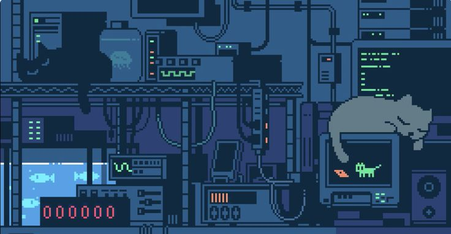
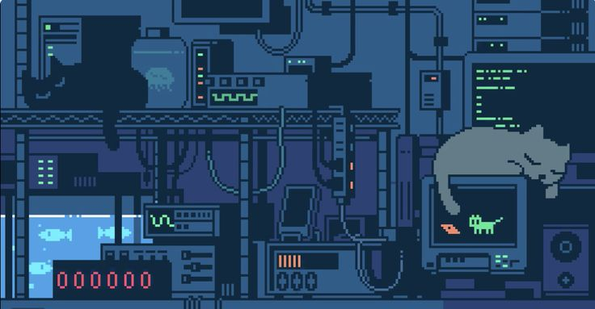

Since I crafted this page with a gaming theme, it would be surprising if one of my hobbies didn’t include video games! From a young age, I’ve adored games of all kinds, starting with Tetris and culminating in immersive experiences like Doom II, Minecraft, Terraria, and CS 1.6. Yes, I’m an old-school gamer!
Every hobby I dive into is a thrilling adventure! Some might say books are for nerds, but in reality, they’re fantastic guides full of tips and tutorials that help sharpen my existing skills or even acquire new ones. I absolutely adore literary books with captivating plots; one of my favorites is Martin Eden by Jack London. With each book I read, it feels like I'm leveling up in an epic RPG!
Chess is my go-to for strategic gameplay. I love crafting new tactics for different positions and making bold, unexpected moves. Sure, I’m no Anatoly Karpov, but I can put up a solid fight. By the way, for those curious, my ELO is 1257! ♔